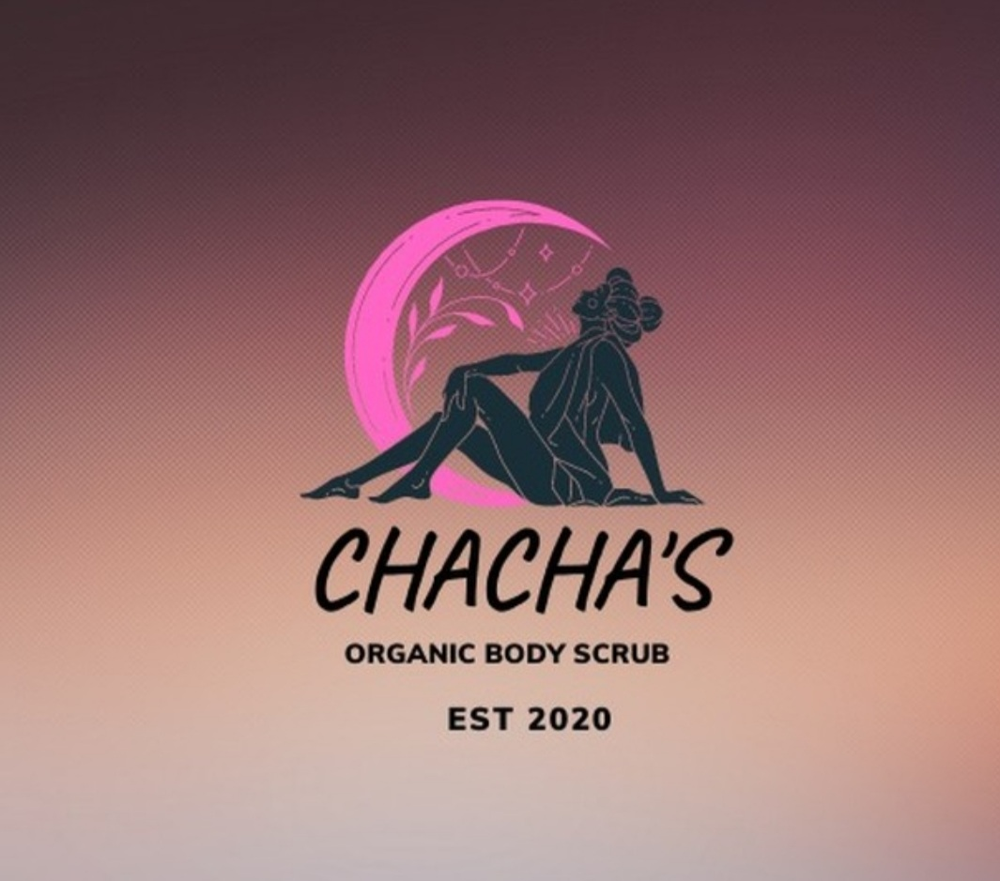

Rich and Natural self-care products
Vision Statement
Our goal is to see adults, adolescents and the generation to come,
do away with all harmful beauty/skin products that put one's health at great risk.
Mission Statement
Staying beautiful while natural!
You don’t have to use harsh chemicals that will damage your skin in the long run
to stay gorgeous.
Brief History
ChaCha’s Organics is a Zambian brand of natural self-care products
that has been on the market since 2020. Due to its quality and uniqueness
and careful selection of the finest natural ingredients, the brand has gained
recognition on social media and around Lusaka.
Products
Our products include natural face and body scrubs made for all skin types,
natural coconut oil for normal to dry skin, and full body scrubbing services.
Starting with only 10 jars of our natural body scrub, we are growing into
an established brand through one-on-one customer interaction.
Our products are packaged in non-degradable glass jars to assure safety
and non-toxic components.
Introduction
We are an organic beauty care line that believes in staying beautiful
without putting your health at risk. Our signature product is a hand-made
body scrub created with carefully selected natural ingredients suitable
for all skin types.
Phone: +260 777924272
Email: bodylogicm@gmail.com
ChaCha’s Organics
kabwata Market
Lusaka Zambia